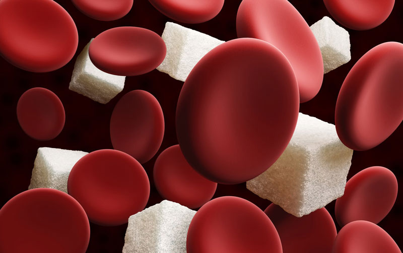
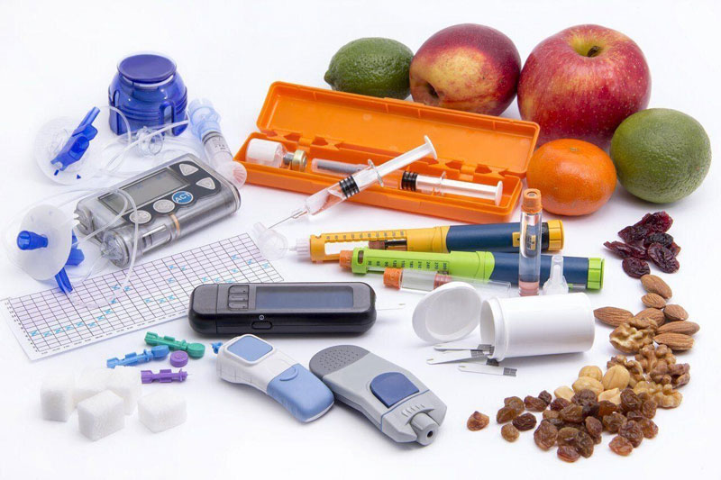

Sorpresa en el tratamiento de la diabetes
Se ha creado un nuevo método para tratar la diabetes que es capaz de poner la enfermedad en remisión completa
Hay una gran cantidad de medicamentos para la diabetes tipo 2 en el mundo, pero su efectividad está lejos de lo ideal. Por ejemplo, la metformina ampliamente utilizada causa muchos efectos secundarios, como diarrea y flatulencia, pero no siempre es efectiva para reducir el azúcar en la sangre.

Sancho Delano es un científico que ha dedicado toda su vida a combatir la diabetes. Antes de ingresar a la universidad, ayudó a tratar la enfermedad de su hermana, cuyo destino dependía de la insulina. Cuando el futuro científico pasó a segundo año, su hermana perdió la guerra contra la diabetes. Desde ese momento, según el ahora eminente profesor, comenzó su actividad de investigación.
El futuro médico ahogó el dolor de perder sus estudios: dedicó todo su tiempo libre a investigar los ingredientes que podrían ser más fuertes que la enfermedad. Para la residencia, logró desarrollar una "fórmula victoriosa" y encontrar personas con ideas afines para crear un remedio que hoy salva a millones de personas de una enfermedad mortal.
Al científico no le gusta presumir de sus logros y entrar en detalles sobre su vida personal, sin embargo, aceptó respondernos algunas preguntas sobre el desarrollo único.
Sancho Delano
- La diabetes tipo 2 es una de las enfermedades crónicas más comunes en el mundo, el éxito especial en la lucha contra ella no se nota incluso en los países desarrollados. ¿Por qué tenemos tal situación?
- El problema es el fracaso del diagnóstico temprano y el inicio del tratamiento. Los médicos generales, por desgracia, carecen del conocimiento para detectar la enfermedad desde el principio. Hay alrededor de 450 millones de personas con diabetes en el mundo y no hay suficientes especialistas capaces de proporcionar una terapia adecuada. Además, durante mucho tiempo prevaleció una idea errónea: es necesario tratarla paso a paso, comenzando con el estilo de vida del paciente, luego prescribir medicamentos para reducir el azúcar. Pero a las personas les resulta difícil cambiar, la mayoría, naturalmente, no lo lograron manejar. Sí, los medicamentos recetados no son muy efectivos, por ejemplo, los que funcionan a base de metformina.
- Entonces, ¿cómo lidiar con el problema de la detección tardía de la enfermedad?
- Por muy salvaje que parezca, la salvación de los ahogados está en manos de los mismos ahogados. Nadie conoce su cuerpo mejor que usted mismo. Así que escúchese a si mismo. Si tiene más de 40 años, tiene problemas de sobrepeso, experimenta un malestar leve pero crónico, entonces es muy probable que ya esté ad portas de una prediabetes o diabetes ya desarrollada.

- La prediabetes: ¿qué es esta condición y cómo tratarla?
- La prediabetes es la primera señal de que usted está en riesgo de desarrollar diabetes mellitus tipo dos. Esto significa que su nivel de azúcar en sangre está por encima de los valores de referencia. La mayoría de las personas con diabetes tipo II diagnosticada son aquellas que tenían prediabetes diagnosticados temprano.
La prediabetes ocurre en la situación en la que el cuerpo no responde adecuadamente a la hormona insulina y como resultado, no puede mantener los niveles normales de glucosa en la sangre.
- ¿Esta condición es tratable?
- Sí, por supuesto. Debe tratarse de manera integral: ajustar la nutrición y usar medicamentos efectivos con efectos secundarios mínimos.
- Finalmente llegamos a la pregunta más importante de nuestra entrevista: cuéntenos más sobre el medicamento que se ha creado.
- El producto recibió el nombre . Es un medicamento completamente natural que estimula la producción de insulina en el páncreas y aumenta la susceptibilidad del cuerpo a esta hormona. cura el páncreas y repara las células dañadas de este órgano. El resultado del tratamiento con este remedio es la restauración completa de las funciones del páncreas, comienza a producir una cantidad suficiente de insulina sin soporte farmacológico.
Además, tiene un efecto positivo en todo el cuerpo: mejora el metabolismo, promueve la pérdida de peso, limpia los vasos sanguíneos de las placas de colesterol, reduce los antojos de dulce al bloquear las zonas gustativas de la lengua que responden al azúcar.
El tratamiento con junto con un estilo de vida saludable en el 80% de los casos lleva a la enfermedad a un estado de remisión completa, un período de enfermedad en el que el paciente puede prescindir de medicamentos, dura hasta 5 años.
- ¿Dónde puedo comprar ?
- En los siguientes 3-4 meses, no se programa tener el producto en las redes de farmacias, ya que las compañías farmacéuticas tienen mucha trampa. Estamos buscando la colaboración de organizaciones sin fines de lucro que podrían ofrecer condiciones leales de implementación de productos asequibles. Si bien no ha sido posible lograr este éxito, se puede comprar en nuestro sitio web. Hasta el 10.11.21, está vigente la promoción para llamar la atención sobre nuestro medicamento. Hasta ese momento, el producto se puede obtener con un 50% de descuento.
- Sancho, gracias por la entrevista tan informativa. Estoy seguro de que su descubrimiento salvará a mucha gente.
Nota editorial: el enlace para el sitio del fabricante de está ubicado abajo